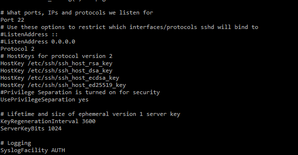
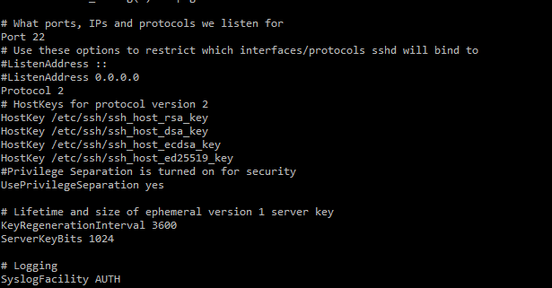

Teniendo el ubuntu server instalado o cualquier otro sistema linux podemos instalar un servicio SSH para manejar la máquina desde otro dispositivo.
Lo primero que deberemos hacer es descargar el servicio con el comando.
apt install -y ssh
Después deberemos de entrar en el archivo de configuración y cambiarlo según nuestras necesidades.
El archivo de configuración:
sudo nano /etc/ssh/sshd_config
Una vez dentro podremos configurar lo que deseamos. Aquí abajo os dejo los parametros mas cambiados.
1234 (Hace referencia al puerto donde escuchará el servicio)
PermitRootLogin no (Hace referencia a que se pueda entrar con root a través de SSH)
MaxAuthTries 2 (Maximo de intentos por login que vamos a permitir)
Para finalizar guardamos los cambios con la combinación de teclas ctrl+o y reiniciamos el servicio
systemctl restart ssh
Una vez reiniciado el servicio lo que haremos será consultar su estado con el siguiente código
systemctl status ssh
Tendrá que aparecer que está activo y corriendo.
 
